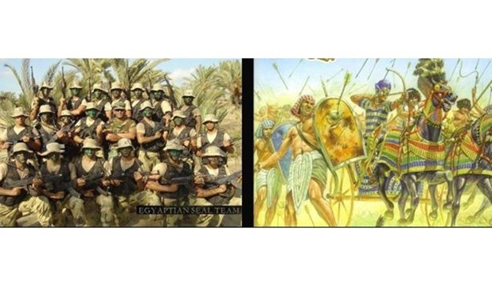

مدرسة مطاي الرسمية للغات
انتصارات الجيش المصرى عبر العصور
الجيش المصرى هو أقدم جيش نظامى ثابت فى العالم بدأ أول حروبه المجيدة من أجل توحيد مصر على يد الملك مينا عام 3425 ق.م وعلى مدى هذا التاريخ الطويل ، اتصف الجيش المصرى بالعديد من الصفات التى ميزته عن أى جيش آخر فى العالم ، وفى مقدمتها أنه لم يكن أبداً جيش عدوان أو احتلال أو اغتصاب لأرض أو حقوق الغير.. بل كان دائماً قوة من أجل دعم السلام وفرضه إذا تطلب الأمر . كما كان الجيش المصرى طوال تاريخه مدرسة للقيم الإنسانية النبيلة فى أوقات السلم والحرب على السواء . وعلى مدى تاريخه سجل جيش مصر انتصارات عظيمة فى المعارك الحاسمة التى خاضها والتى أتيحت لرجاله فيها فرصة القتال والمواجهة .
حرب التوحيد :
قبل نحو ثمانية آلاف عام تم توحيد المقاطعات المصرية فى مملكتين : مملكة الوجه البحرى ، ومملكة الوجه القبلى ، وأصبح لكل منهما جيش منظم ، وظل هذا الأمر حتى عام 3425 قبل الميلاد عندما تم توحيد مصر نهائياً على يد الملك مينا . وفى بداية الأسرة الثالثة تعرضت مصر لغارات من البدو على حدودها فسارع الملك زوسر بوضع اللبنات الأولى فى بناء جيش موحد ثابت لمصر .. وقد شهد تنظيم وتسليح هذا الجيش تطورات عديدة فى عصور الدولة القديمة والدولة الوسطى ، أما التطور الكبير فى تنظيم الجيش المصرى فقد حدث فى عهد الدولة الحديثة (1552 – 1085 ق.م ) . وعلى مدى هذه القرون خاض الجيش المصرى معارك كبرى. وفى عصر الدولة الوسطى تكالبت على مصر الهجرات العنصرية خاصة من قبل الجماعات الآسيوية التى عرفت بالهكسوس الذين أمكنهم الاستيلاء على السلطة لأول مرة فى تاريخ مصر .. وظل هؤلاء الغزاة يحكمون مصر قرابة قرن ونصف القرن من الزمان . وقد وقع عبء تحرير مصر من هذا الوجود الأجنبى على عاتق الأسرة 17 ، وتجلت فى هذه الحروب آيات البطولة والشجاعة من الحكام والمقاتلين
وقد وقع عبء تحرير مصر من هذا الوجود الأجنبى على عاتق الأسرة 17 ، وتجلت فى هذه الحروب آيات البطولة والشجاعة من الحكام والمقاتلين وشاركت بعض الملكات المصريات فى تلك الحروب مثل الملكة " أياح حتب " التى ساندت زوجها " سقنن رع الابن فى كفاحه ضد الهكسوس حتى سقط كأول شهيد فى سبيل مصر ، فاستكمل ابنه أحمس الأول تحرير أرض مصر ، ويعد أحمس الأول بطل استقلال مصر فى العهد القديم وطارد الهكسوس من وادى النيل .
معركة مجدو :
فى عام 1468 ق.م توفيت ملكة مصر حتشبسوت وخلفها فى الحكم تحتمس الثالث فحكم مصر 32 عاماً قاد خلالها 16 حملة عسكرية لتوطيد سلطان مصر ونفوذها فى كل أنحاء المعمورة المعروفة آنذاك .. ولم يعرف جيش مصر خلال حكمه طعم الهزيمة .. ويعتبر تحتمس الثالث من أعظم ملوك مصر القديمة وأقدر قوادها العسكريين والسياسيين ، ومن أشهر المعارك التى ارتبط بها اسمه معركة " مجدو" . كانت مجدو – تل المسلم حالياً شمال شرق جبل الكرمة شمال فلسطين – منطقة ذات موقع استرايجى .. فتحرك إليها الجيش المصرى بقيادة تحتمس الثالث حتى انقض على أعدائه عام 1468 ق. م ، واختار تحتمس الهجوم عبر ممر مجدو مما كان مفاجأة كبرى لأعدائه .. فاختل نظامهم وتفرقت صفوفهم ، فحسم جيش مصر المعركة فى ساعات .
معركة قادش :
رمسيس الثانى هو أشهر ملوك مصر على الإطلاق .. ومؤسس الإمبراطورية الثانية فى تاريخ مصر القديمة ، ومن أعظم معارك رمسيس الثانى معركة قادش . وقد استهدفت مصر خلال هذه المعركة القضاء على تحالف الآسيويين المتربصين بأمن مصر ، ووضع رمسيس الثانى هدفاً لجيشه هو ضرب تجمعات الأعداء المجتمعين عند مدينة قادش السورية ذات الموقع الاستراتيجى ، وفى بداية المعركة فى عام 1285 قبل الميلاد ، تعرض رمسيس لخدعة من أعدائه .. وفى هذا الوقت العصيب برزت مهارات رمسيس الثانى وكفاءته العسكرية وأخرج جيشه من هذا المأزق وحول الهزيمة المنتظرة إلى نصر مظفر . وأسرع الملوك الخاتيين بتقديم فروض الولاء لفرعون مصر .. الذى قبل عرض الصداقة ، وتم توقيع أول معاهدة سلام فى التاريخ فى عام 1270 بين جيش مصر المنتصر وبين ملوك الخاتيين . لقد كانت معركة قادش ملحمة شجاعة وصمود ، وبطولة عظيمة للجيش المصرى بكل المعايير والمقاييس العسكرية .
انتصار حطين :
ُمنذ أن دخلت مصر الإسلام ، أصبحت حصن المسلمين وقلعتهم .. وأصبح جيش مصر درع وسيف الأمة الإسلامية .. وحقق لها النصر فى معارك كبرى سجلها التاريخ فى حطين وغيرها . وتعد معركة حطين موقعة حاسمة فى تاريخ الشرق بل والغرب أيضاً .. فكانت هى المعركة الفاصلة بين الجيوش الإسلامية وجيوش الصليبيين ، ففى عام 1187 قاد صلاح الدين الأيوبى جيوشه فى اتجاه بحيرة طبرية ، ونشبت المعركة العنيفة واستطاع صلاح الدين على رأس فرقة القلب من جيشه دحر محاولات الصليبيين اختراق جيشه والوصول إلى طبرية ، وهكذا كان هذا النصر العظيم فى حطين بمثابة بداية النهاية للوجود الصليبى فى الآراضى المقدسة فى فلسطين ، وليعود بيت المقدس إلى أيدى المسلمين .
معركة المنصورة :
بعد هزيمة وطرد الصليبيين من الشرق عادوا بحملة أخرى بعد نحو نصف قرن .. وهى حملة قادها الملك لويس التاسع ملك فرنسا واستهدف خلالها غزو مصر والاستيلاء عليها .. واستغلت الحملة انشغال السلطان الصالح نجم الدين أيوب بإخماد بعض الاضطرابات بالشام .. وجاء الأسطول الفرنسى بحراً عام 1248 م مكوناً من 1800 سفينة تحمل 80 ألف مقاتلاً بمؤنهم ومعداتهم. وفجأة مات السلطان الصالح نجم الدين فى نوفمبر 1249م ، وبدأ دهاء زوجته الملكة شجرة الدر ، التى أدارت البلاد والمعركة دون أن تعلن وفاة السلطان . وبدأ المصريون يهاجمون حصون الفرنجة ، وأصابوهم بخسائر فادحة مما دفعهم إلى اتخاذ قرار بالهجوم الخاطف والدخول فى معركة فاصلة واندفع جيش الصليبيين لاقتحام المنصورة حيث وجهوا بأروع معارك التحم فيها المقاتلون مع أفراد الشعب وأنزلوا بالفرنجة أبلغ الخسائر .
سحق التتار فى عين جالوت :
جنكيزخان" .. طاغية ولد فى الصين .. قتل منها الآلاف فى مذابح وحشية وفتوحات قتالية فبسط سلطانه فى فترة وجيزة من حدود الصين إلى قلب أوروبا وعواصم الشام . بعد وفاة " جانكيزخان " ، تولى الحكم حفيده " مكوفان " الذى استدعى أخيه " هولاكوخان" وكلفه بإخضاع بلاد المسلمين حتى أقصى بلاد مصر ، وبالفعل اجتاح التتار إيران ثم بغداد ودخل غزة وبالتالى وصلوا إلى مشارف مصر التى كان يتولى عرشها سيف الدين قطر الذى وصله إنذار من هولاكو فقبل قطز التحدى . وعند عين جالوت وقعت المعركة الكبرى .. واصطف الجيشان فى المواجهة وبعد تكتيكات بارعة من الطرفين حسمت شجاعة جيش المصريين وحكمة قادتهم المعركة .. وانقشع غبارها على جثث معظم جيش التتار الذى ذاق طعم الهزيمة لأول مرة .
جيش مصر فى العصر الحديث :
بعد تولى محمد على باشا عرش مصر فى بداية القرن التاسع عشر ، أعاد بناء جيش مصر فى إطار مشروعه القومى لبناء دولة حديثة قوية فى مصر ، وخاض هذا الجيش حروباً عديدة أشهرها الحروب التى خاضها ضد تركيا فى الشام والتى أبلى فيها جيش مصر بلاء رائعاً ، وكشف عن بسالة الجندى المصرى وقدرته على استيعاب أحدث الأسلحة وخوض أعنف المعارك . وهكذا هزم جيش مصر القوات التركية فى معركة الزراعة فى 14 أبريل 1832 ، ثم معركة عكا فى 27 مايو 1832 ، ثم معركة حمص فى 6 يوليو 1832 ، ومعركة بيلان فى 30 يوليو 1832 .
حروب فى إطار الصراع العربى الإسرايلى :
وفى القرن الحالى خاض جيش مصر حروب فى إطار الصراع العربى الصهيونى فى 1948 عندما اشترك الجيش المصرى فى حرب فلسطين بعد القرار الذى أصدرته هيئة الأمم المتحدة في (15 من المحرم 1367هـ = 29 من نوفمبر 1947م) بتقسيم فلسطين، وإنشاء دولتين؛ إحداهما للعرب، والأخرى لليهود، وكان لهذا القرار أثر خطير في مصر؛ فاجتاح الناس شعور بالسخط والغضب والثورة ، وفى 1956 اعتدت كل من فرنسا و إسرائيل و بريطانيا على اثر قيام جمال عبد الناصر بتأميم قناة السويس ، ونفذت قوات الدول الثلاث الهجوم على مصر في يوم 29 أكتوبر عام 1956م فاحتلت القوات الإنجليزية و الفرنسية مدينة بورسعيد و لكنها عجزت عن التقدم نحو الإسماعيلية بسبب شدة المقاومة المصرية. وفشل العدوان وكان من أهم أسباب فشله هو شدة المقاومة المصرية و التحام الجيش و الشعب ضد العدوان . كما خاض الجيش المصرى حرباً أخرى مع إسرائيل عام 1967 ، عندما بدأت إسرائيل تختلق المنازعات وتشن الهجمات الانتقامية ضد الدول العربية المجاورة لها ، فأثارت مشكلة بعزمها على تحويل مجرى نهر الأردن ، كما أعتدت على سوريا فى نوفمبر 1966 ، وقامت بعدوان آخر فى 7 أبريل 1967 ، وهكذا ظلت الأحداث تتوالى وشبح الحرب يخيم على المنطقة . وعندما بدأت إسرائيل فى حشد قواتها تغير التفكير فى الهجوم وأعادت القوات المصرية تنظيم أوضاعها فى سيناء تبعاً للتحركات الإسرائيلية ، الأمر الذى استلزم إجراء تحركات كثيرة لكل الوحدات المصرية خلال تلك الفترة ، ولكن نتيجة لسرعة تعبئة القوات الاحتياطية المصرية لم تكن هذه الوحدات على درجة كافية من الاستعداد والتسلح حتى تتمكن من القتال بالكفاءة المطلوبة ، مما أدى إلى نكسة 1967 . وتركت هزيمة 67 أثراً قاسياً فى نفوس المصريين ورسمت الحزن على وجوههم ، ولكن وسط هذا اليأس انطلقت الإرادة المصرية لتعلن رفضها للهزيمة وتصميمها على إزالة العدوان مهما كانت التضحيات . وبدأت القيادة المصرية تتبع نظام ضبط النفس حتى تتاح لها فرصة إعادة بناء القوات المسلحة تسليحاً وتدريباً وتنظيماً .
حرب الاستنزاف :
بدأت مرحلة الاستنزاف ضد القوات الإسرائيلية شرق القناة فى مارس 1969.. حيث تطورت الاشتباكات وتصاعدت حدتها كما فرضت قواتنا حرباً طويلة الأمد على القوات الإسرائيلية لاستنزاف مواردها وقوتها البشرية بعد ارتفاع معدلات خسائرها . وفى يوم 8 مارس 1969 قصفت المدفعية المصرية قوات العدو على طول المواجهة ، واستمر القصف حتى تحطم أكثر من 80 % من تحصينات وقلاع خط بارليف . وتابعت قواتنا مخططها لاستنزاف العدو ، فكانت عمليات العبور والإغارة على العدو شرقاً وغرباً ليلاً ونهاراً ، وبدأت جماعات العبور تأخذ أحجاماً أكبر حتى وصلت إلى سرية ، بل استطاعت كتيبة كاملة أن تعبر القناة إلى الضفة الشرقية وتتمسك بمواقعها وترفع عليها أعلام مصر . وبدأت قواتنا البحرية تدخل حلبة الصراع ، حيث قامت وحداتنا البحرية يوم 9 نوفمبر 69 بقصف مواقع العدو فى مناطق رمانة وبالوظة على الساحل الشمالى بسيناء ، كما قامت الضفادع البشرية بهجوم جرئ على ميناء إيلات الإسرائيلى يوم 16 نوفمبر 1969 وتمكنت من إغراق 3 قطع بحرية للعدو . وخلال يوم 29 نوفمبر 69 قامت قواتنا بإغارة على المنطقة القوية المعادية 146 للمرة الثانية حيث تم تدمير عدد من الدبابات والعربات للعدو بلغت خسائره فى الأفراد 40 فرداً بين قتيل وجريح . وفى 5 فبراير 1970 قامت قواتنا بعمل كمين لقوات العدو على طريق القنطرة – التينة على الضفة الشرقية للقناة حيث تم تدمير ثلاث دبابات وثلاث عربات للعدو . كما شهد ميناء إيلات للمرة الثانية هجوماً جريئاً لمجموعة من ضفادعنا البشرية يوم السادس فبراير 1970 ، دمر للعدو سفينتان وأصيبت سفينة ثالثة . وفى الوقت الذى كانت قواتنا تنفذ فيه مخططاً دقيقاً لاستنزاف العدو على طول المواجهة ، حاولت القوات الإسرائيلية أن تقوم بعمليات خاطفة على بعض مواقعنا المنعزلة فى الجزيرة الخضراء وساحل خليج السويس ، وتحطمت كل تلك المحاولات .. ودفع خلالها العدو ثمناً باهظاً من الأفراد والمعدات والأسلحة . ويوماً بعد يوما .. بدأت شبكة الصواريخ المصرية تشكل حائطاً صلباً فى مواجهة الطائرات الإسرائيلية ، بعد أن فشلت فى محاولاتها المحمومة لعرقلة بنائها .. ومعها بدأت معارك استنزاف الطائرات الإسرائيلية ، وشهد شهر يوليو 1970 تحطيم 21 طائرة إٍسرائيلية . بدأت القيادة الإسرائيلية تعترف بأن حرب الاستنزاف خلقت موقفاً جديداً تماماً ، وأدركت أمريكا حجم الكارثة التى باتت تنتظر إسرائيل .. فكانت مبادرة روجرز ووقف إطلاق النار الذى بدأ فى 7 أغسطس 1970 .
حرب أكتوبر :
ثم يأتى السادس من أكتوبر عام 1973 ، يوم عبور الجندى المصرى لقناة السويس، ذلك الحدث المشهود في تاريخ الشعب العظيم الذى آمن بحقه فى استرداد الأرض والكرامة، دون تفريط أو تهاون. وبدأت الحرب في الساعة 2 بعد ظهر ذلك اليوم لتبدأ ملحمة العبور العظيم، ووجه الطيران المصري ضربات مكثفة لمواقع العدو ليفتح الأجواء لإنشاء معابر المعديات والكباري على قناة السويس، ويتم فتح 81 فتحة شاطئية في الساتر الترابي بأسلوب التجريف بمضخات المياه النفاثة محققة إزالة 3 مليون متر مكعب من التربة، وتمت الفتحة الأولى في الساعة 5.15 مساءً، وتم أول إنشاء معبر معديات في الساعة 6:30 مساء، وأول كوبري تم إقامته على القناة في الساعة 8.30 مساءً. وخلال أعمال قتال اليوم الأول دمرت قواتنا اكثر من 200 دبابة إسرائيلية وقتلت وأسرت وحاصرت أكثر من 1500 جندي وضابط إسرائيلي . وقد تجلت حنكة القادة السياسيين والعسكريين فى دقة التخطيط العسكري والاستراتيجي، واستخدام الخداع الاستراتيجي، واللجوء إلى عنصر المفاجأة الذى افقد العدو توازنه. كما تجلت شجاعة المقاتل المصرى وجسارته فى إيام الحرب، وكان إيمانه بالنصر واسترداد إرضه وكرامته سلاحه الأول فى ذك الحصون وتحطيم الموانع وهدم الاستحكامات والخطط التى أقامها العدو.